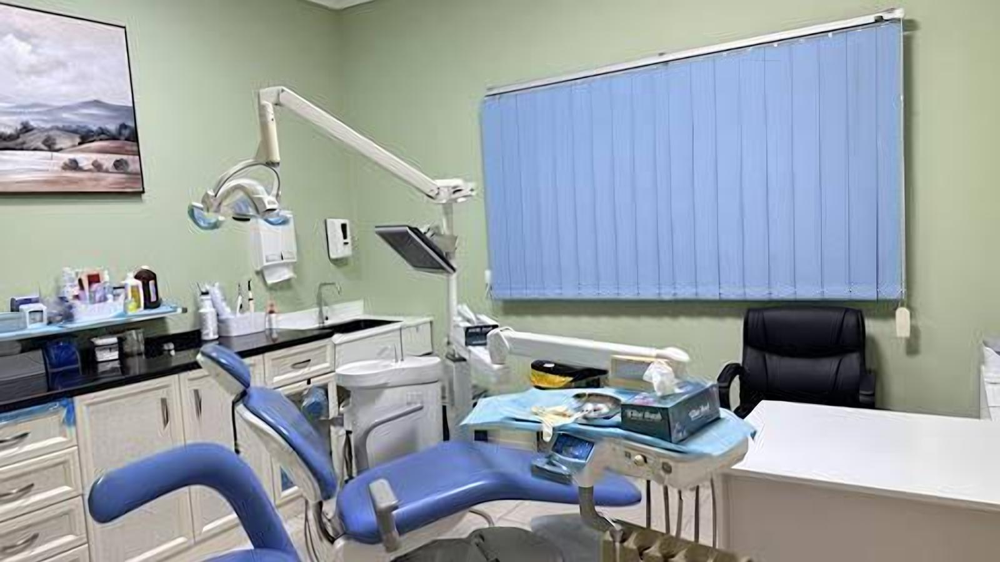
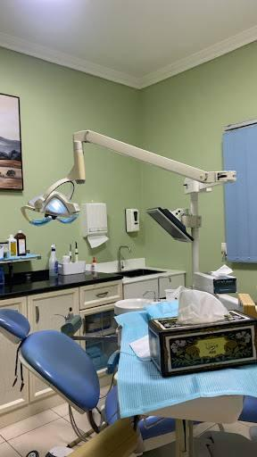
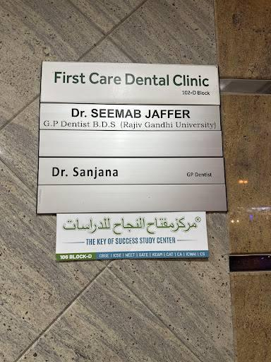
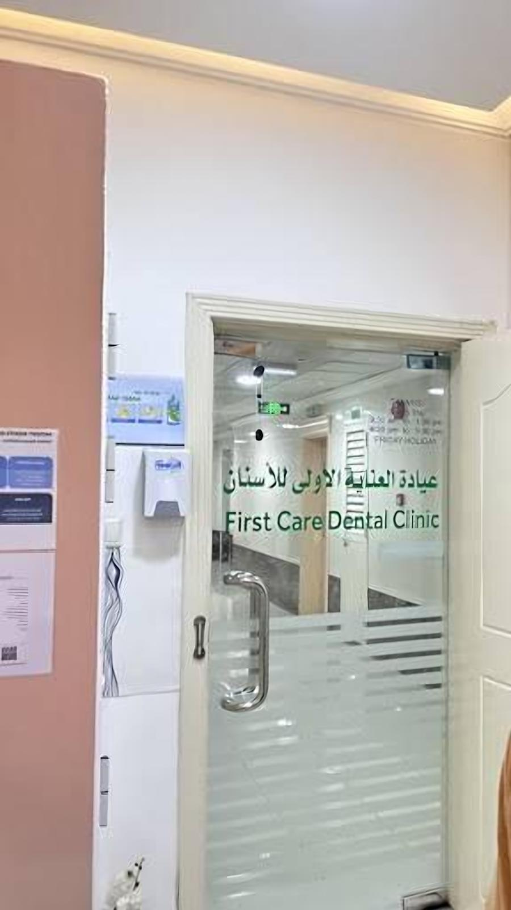
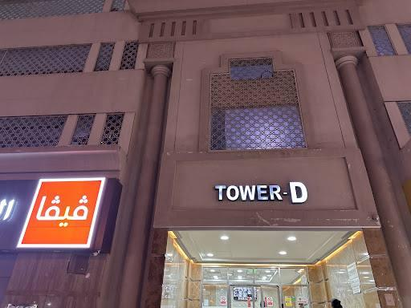
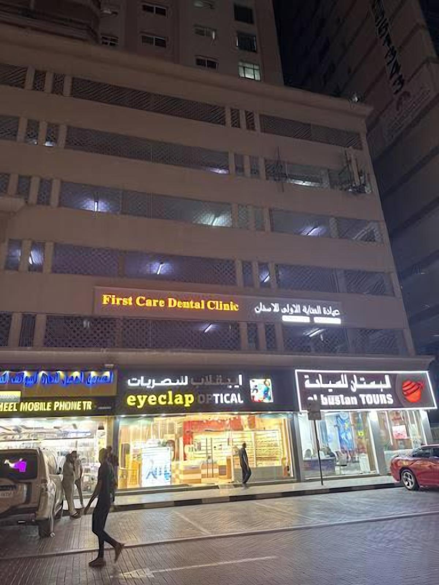

Tooth & wisdom tooth extraction
Quick, careful extractions, including wisdom teeth. Patients describe it as painless.
عيادة فيرست كير لطب الأسنانTower D · Malacca Street · Al Nahda, Sharjah
Gentle, honest dentistry from Dr. Seemab Jaffer and the team: extractions, root canals, fillings, braces and dentures at prices patients call very affordable. Nervous patients and children welcome.
5.0231 Google reviewsPerfect 5.0 on Google
Treatments
Quick, careful extractions, including wisdom teeth. Patients describe it as painless.
Saving the tooth where it can be saved, with honest advice when it can't.
Tooth-coloured fillings for cavities and chips.
Orthodontic assessment and braces for teens and adults.
Partial and clip-on dentures for missing teeth.
Patience for nervous kids: one 13-year-old patient had four premolars out and still wrote us a review.
Your dentists
19 reviews mention him
G.P. Dentist, B.D.S.
"I showed up even before their official opening time, but Dr. Jafferi was kind enough to welcome me right away."Lara C.
Dentist
"Clean, smells fresh, and the prices are very affordable."Wathsala M., on the clinic





Photos from the First Care Dental Clinic Google Maps listing
"I had a wonderful experience at First Care Dental Clinic. The clinic is very clean, smells fresh, and the prices are very affordable. I went there for a clip-on denture for my missing tooth, and Dr. Jaffry did an amazing job restoring my smile back. He is very professional, kind, and caring. The staff are also very friendly and welcoming. Highly recommended for anyone looking for quality dental care!"
Owner replied: Thank you for your 5- star rating . We delighted to hear you had a comfortable treatment experience.Thank you for recommending our clinic-it truly means a lot to us.We look forward
"Today i visited First Care Dental Clinic for my molar tooth extraction and it was so smooth painless. Dr. Seemab Jafferi is so professional and well experienced he made sure that during the process I dont feel any pain. He kept on asking if I am feeling pain making me feel so comfortable. I would blindly recommend Dr. Seemab to everyone who is looking for reliable doctor for dental care."
Owner replied: Thank you for your kind review!We are delighted to hear you had a comfortable treatment experience.Thank you for recommending our clinic -it truly means a lot to us.We look forward
"I had a great experience in First Care Dental Clinic, its a highly recommend to my friends and family. Specially Dr. Seemab Jafferi is a very professional, skilled, kind and genuinely caring dentist. Explained everything clearly and made me feel comfortable throughout the procedure. And also the staffs are very accomodating and friendly. Thank you very much for your wonderful service."
Owner replied: thank you so much
"I visited today to get my cavity filled to doctor Seemsb Jafferi, and honestly, I didn’t feel anything throughout the whole procedure — it was like magic! If you're reading reviews and considering going here, don’t worry at all. You can go without any fear. The staff is professional, the experience is painless, and the prices are very reasonable — that’s another big plus!"
Owner replied: Thank you so much for taking the time to leave a review for our Dental Clinic, your kind words and support truly means a lot to us and help others feel confident in choosing our ca
Before your visit
Daily 10 AM to 2 PM and 5 PM to 9 PM (Friday mornings 10:30 AM to 1:30 PM).
Yes. Many of our reviews come from parents and teenagers.
Call +971 6 536 6955. Walk-ins are seen when a chair is free, but booking is recommended.
Find us
| Monday | 10 AM – 2 PM, 5 – 9 PM |
|---|---|
| Tuesday | 10 AM – 2 PM, 5 – 9 PM |
| Wednesday | 10 AM – 2 PM, 5 – 9 PM |
| Thursday | 10 AM – 2 PM, 5 – 9 PM |
| Friday | 10:30 AM – 1:30 PM, 5 – 9 PM |
| Saturday | 10 AM – 2 PM, 5 – 9 PM |
| Sunday | 10 AM – 2 PM, 5 – 9 PM |